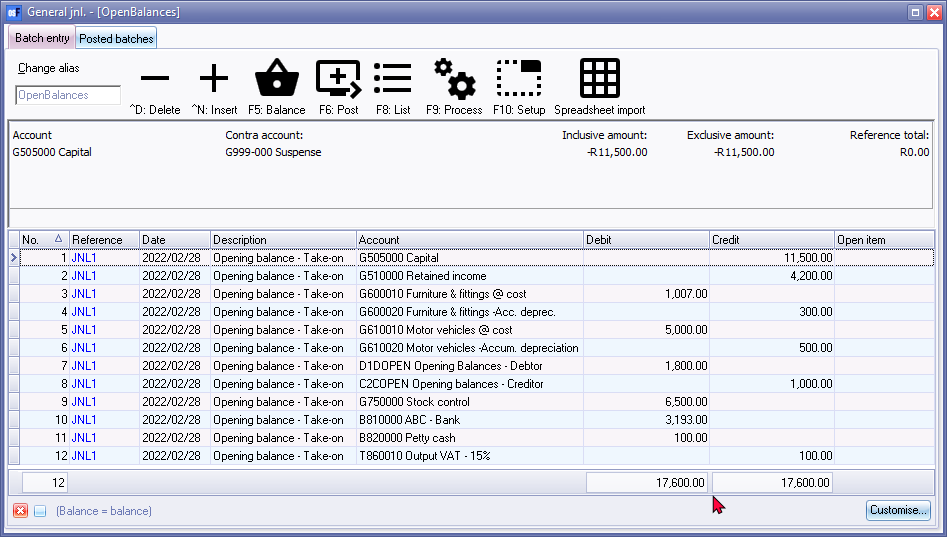

General journal
What is the general journal used for?
The general journal is a book or computer program used in accounting to record all transactions in chronological order. It is also known as the "journal" or "journal entry book".
Each transaction recorded in the general journal includes a date, a brief description of the transaction, the accounts involved, and the amounts debited or credited. These transactions are then later transferred to the appropriate ledgers for posting and summarization.
The general journal is used to record a wide range of transactions, such as sales, purchases, expenses, and other financial transactions. It is also used to record adjusting entries and closing entries at the end of an accounting period.
By recording all transactions in the general journal, a business can keep a complete and accurate record of its financial activities. This information is then used to prepare financial statements and to analyze the financial performance of the business. The general journal is an essential tool for any business that wants to maintain accurate financial records and make informed decisions about its financial activities.
When should a general journal not be used?
A general journal should NOT be used in certain situations where there are specific journals designed for recording transactions. For example:
- Sales and purchases: For recording sales and purchases, specialized journals like sales journal and purchase journal should be used.
- Cash transactions: For recording cash transactions, specialized journals like cash receipts journal and cash disbursements journal should be used.
- Payroll: For recording payroll transactions, a specialized journal like payroll journal should be used.
- Fixed assets: For recording fixed asset transactions, a specialized journal like fixed asset journal should be used.
In general, a general journal is used to record non-routine or unusual transactions that do not fit into the other specialized journals. However, if there is a specific journal available for a particular type of transaction, it is best to use that journal to ensure accuracy and efficiency in record-keeping.
The General journal is used to enter the general transactions and corrections, or adjustments, you would not normally enter in the Sales journal, Purchase journal, Receipts journal, Payments journal.
When to use the general journal?
The general journal is used to enter and post (update) non-regular transactions to the General journal, such as:
- To Take-on your Opening Balances for General ledger accounts, Debtor accounts and Creditor accounts.
- To correct errors in posting (accounts have been debited or credited incorrectly or with incorrect amounts, etc.)
- To enter transactions for depreciation of fixed assets.
- To write-off bad debts and make provision for doubtful debts.
- To do year-end adjustments for the accrual-based accounting.
|
|
You may create or add any other Batch types or Journal types in Setup → Batch types to suit your specific requirements. Examples of journals that you could use for specific other transactions:
|

To transactions in the General journal:
- On the Default ribbon, select Batch entry (F2).
- Select the General journal.
- Click on the Open button.
|
|
If no contra account, or a different contra account than the contra account you wish to use, is displayed on the Batch type selection screen, you need to set up the options for the batch. If you have not yet set up the General journal, or if your requirements should change, click on the F10:Setup icon. |
|
|
Note that for General journal, the Amount entry field could be set to debit, credit or allow both, depending on your requirements. |

- Enter the Alias (batch name) in the Change alias field on the Topbar of the Batch entry screen.
|
|
The alias option allows you to identify a batch by a unique name. You will be able to select the batch by alias or batch name if you need to reverse the posted batch or import a posted batch. |
- Enter and/or select the following:
- Reference number - Enter the applicable reference number.
- Date - Enter or select the date of the transaction.
- Description - Enter a brief description for the transaction.
|
|
You need to enter a sensible description to describe the nature of the transaction. |
- Account - Select the applicable account to which you need to allocate the debit or the credit transaction.
- Tax - Select the applicable Input Tax or Output Account for the transaction, if applicable.
|
|
This is only applicable if Input VAT/GST/Sales Tax is allowed on a transaction, and if you are registered as a VAT/GST/Sales Tax Vendor. If no VAT/GST/Sales Tax is applicable to the transaction, select the "Empty" option as the "No Tax" code. |
|
|
Since no Tax is applicable to these transactions, you may select to hide the tax column, F7:Exclusive and F7:Inclusive icons, as well as the lookup facility in the Setup options for the General journal, as in this example. |
- Amount - Enter the amount of the transaction (Inclusive or Exclusive of VAT/GST/Sales Tax, if applicable).
- After entering the transactions in the General journal, the transactions will be displayed as follows:

|
|
You may enter transactions in a batch daily, and only post at the end of the month. Exiting or closing the batch, or even osFinancials 5, will not cause these transactions to be lost. You may also choose to post after every entry. |
- Click on the F5:Balance icon, to create balancing transactions for the transactions entered in the batch, if the batch is not in balance.
|
|
It is not necessary to balance the batch if you have entered debit transactions for the same amount as for credit transactions, the net total of all transactions (debits minus credits) and the reference total for the entire batch (journal) should be zero.
|
- Click on the F8:List icon to print a list of the transactions in the batch.
|
|
It is a good idea to list the batch, and check the entries on the batch thoroughly. If there are any errors, you may edit the batch, before posting the batch. |
- Click on the F6:Post icon, to post (update) the batch to the ledger.
|
|
It is not necessary to post (update) the transactions at the end of each day. You may add and/or post the transactions on a daily, or weekly basis, or at the end of a month. When you have entered a few transactions, you may close or exit the batch. The data will not be lost. |